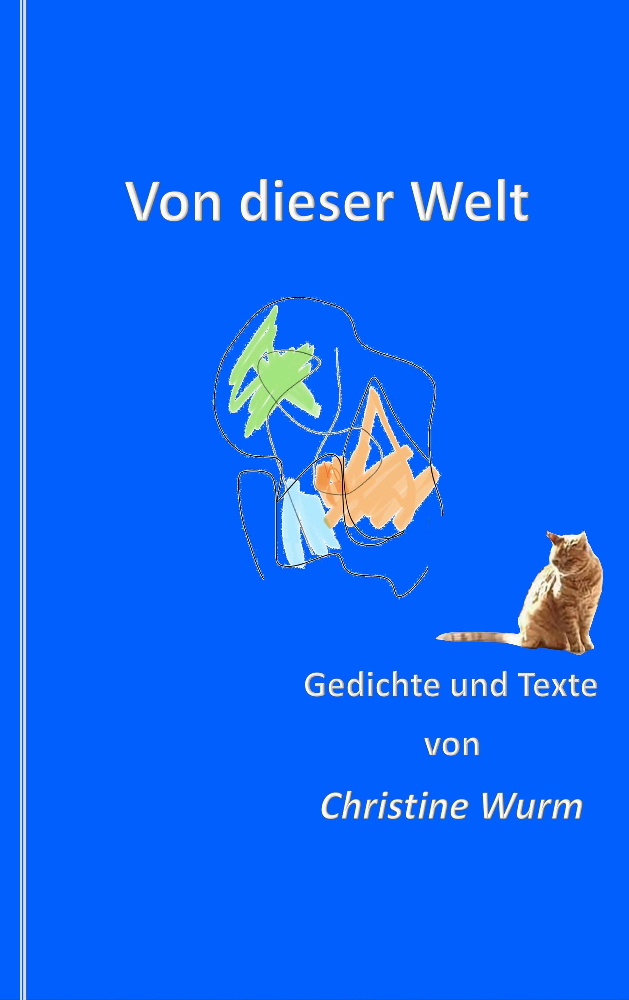

Alle in diesem Band zusammengestellten Gedichte, Texte und Fragmente stammen aus dem Nachlass von Christine Maria Wurm. Der Band trägt wie
eines der Gedichte den Titel Von dieser Welt
.
Beim Lesen dieser Gedichte und Texte wird einem schnell klar, was Von dieser Welt
bezeichnet. Schreiben bedeutete für Christine Wurm sich im Leben
zu verorten, sich mit sich selbst in dieser Welt und mit der sie umgebenden Welt auf ihre ganz persönliche Weise auseinanderzusetzen.
Zuletzt blieb Schreiben für sie die Tür zu einem Raum, indem sie und nicht ihre Krankheit über ihr Leben bestimmte; auch wenn sie das viel Kraft
kostete. Das spiegelt sich in den Gedichten und Texten dieses Bandes.
Sich mit der eigenen Endlichkeit auseinanderzusetzen, ohne zu hadern, sie zu akzeptieren ohne Drama, den Blick fest auf die Schönheit und
Großartigkeit des Lebens gerichtet die es auch dann noch besitzt, wenn unser eigenes zu Ende geht, dazu bedarf es einer großen Seele. Und diese
hatte sie. Immer.
Die Gedichte und Texte in diesem Band befassen sich mit Dingen, die uns alle angehen. Was wir andern können und was nicht, was wir bestimmen und was uns bestimmt, wie mit Dingen umgehen, gegen die wir scheinbar ohnmächtig sind, wie unsere eigene Endlichkeit. Wir alle werden damit konfrontiert, früher oder später. Wie wir das dann mit uns selbst ausmachen, ist eine ganz persönliche Sache. Christine Wurm hat versucht für sich diese Dinge zu benennen, in Sprache zu fassen, sie sich begrifflich machen. Das ist es worum es in den Gedichten und Texten dieses Bandes geht.